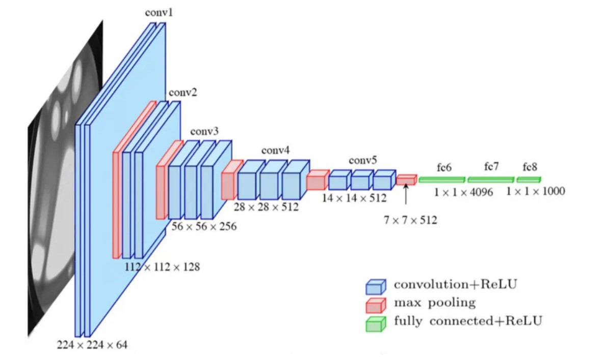

About - Microsoft Word
File
Edit
View
Insert
Format
Tools
Table
Help


B
I
U


How to use VGG16 for face and gender recognition
How to build a face and gender recognition Python project using deep learning and VGG16.
What is deep learning?
Deep learning is a subcategory of machine learning, a neural network with three or more layers. These neural networks try to simulate the behavior of the human brain by learning from large amounts of data. While a neural network with a single layer can still make approximate predictions, additional hidden layers can help to optimize and refine for accuracy.
Deep learning improves automation by performing tasks without human intervention. Deep learning can be found in digital assistants, voice-enabled TV remotes, credit card fraud detection, and self-driving cars.
Building the Python project
Download the VGG16 Face Dataset and the Haar Cascade XML file used for face detection which will be used for the preprocessing in the face recognition task.
faceCascade = cv2.CascadeClassifier(os.path.join(base_path, "haarcascade_frontal_face_default.xml"))
# haar cascade detects faces in images
vgg_face_dataset_url = "http://www.robots.ox.ac.uk/~vgg/data/vgg_face/vgg_face_dataset.tar.gz"
with request.urlopen(vgg_face_dataset_url) as r, open(os.path.join(base_path, "vgg_face_dataset.tar.gz"),
'wb') as f:
f.write(r.read())
# extract VGG dataset
with tarfile.open(os.path.join(base_path, "vgg_face_dataset.tar.gz")) as f:
f.extractall(os.path.join(base_path))
# download Haar Cascade for face detection
trained_haarcascade_url = "https://raw.githubusercontent.com/opencv/opencv/
master/data/haarcascades/haarcascade_frontalface_default.xml"
with request.urlopen(trained_haarcascade_url) as r, open(os.path.join(base_path,
"haarcascade_frontalface_default.xml"), 'wb') as f:
f.write(r.read())
Selectively load and process a specific number of images for a set of predefined subjects from the VGG Face Dataset.
# populate the list with the files of the celebrities that will be used for face recognition
all_subjects = [subject for subject in sorted(os.listdir(os.path.join(base_path,
"vgg_face_dataset", "files"))) if subject.startswith("Jesse_Eisenberg")
or subject.startswith("Sarah_Hyland") or subject.startswith("Michael_Cera")
or subject.startswith("Mila_Kunis") and subject.endswith(".txt")]
# define number of subjects and how many pictures to extract
nb_subjects = 4
nb_images_per_subject = 40
Iterate through each subject’s file by opening a text file associated with the subject and reading the contents. Each line in these files contains a URL to an image. For each URL (which points to an image), the code tries to load the image using urllib and convert it into a NumPy array.
images = []
for subject in all_subjects[:nb_subjects]:
with open(os.path.join(base_path, "vgg_face_dataset", "files", subject), 'r') as f:
lines = f.readlines()
images_ = []
for line in lines:
url = line[line.find("http://"): line.find(".jpg") + 4]
try:
res = request.urlopen(url)
img = np.asarray(bytearray(res.read()), dtype="uint8")
# convert the image data into a format suitable for OpenCV
# images are colored
img = cv2.imdecode(img, cv2.IMREAD_COLOR)
h, w = img.shape[:2]
images_.append(img)
cv2_imshow(cv2.resize(img, (w // 5, h // 5)))
except:
pass
# check if the required number of images has been reached
if len(images_) == nb_images_per_subject:
# add the list of images to the main images list and move to the next subject
images.append(images_)
break
Face detection set up
- Locate one or more faces in the image and put it in a box.
- Make sure the face is consistent with the database, such as geometry and photometrics.
- Extract features from the face that can be used for the recognition task.
- Match the face to one or more known faces in a prepared database.
# create arrays for all 4 celebrities
jesse_images = []
michael_images = []
mila_images = []
sarah_images = []
faceCascade = cv2.CascadeClassifier(os.path.join(base_path, "haarcascade_frontalface_default.xml"))
# iterate over the subjects
for subject, images_ in zip(all_subjects, images):
# create a grayscale copy to simplify the image and reduce computation
for img in images_:
img_ = img.copy()
img_gray = cv2.cvtColor(img_, cv2.COLOR_BGR2GRAY)
faces = faceCascade.detectMultiScale(
img_gray,
scaleFactor=1.2,
minNeighbors=5,
minSize=(30, 30),
flags=cv2.CASCADE_SCALE_IMAGE
)
print("Found {} face(s)!".format(len(faces)))
for (x, y, w, h) in faces:
cv2.rectangle(img_, (x, y), (x+w, y+h), (0, 255, 0), 10)
h, w = img_.shape[:2]
resized_img = cv2.resize(img_, (224, 224))
cv2_imshow(resized_img)
if "Jesse_Eisenberg" in subject:
jesse_images.append(resized_img)
elif "Michael_Cera" in subject:
michael_images.append(resized_img)
elif "Mila_Kunis" in subject:
mila_images.append(resized_img)
elif "Sarah_Hyland" in subject:
sarah_images.append(resized_img)
The detectMultiScale method recognizes faces in the image. It then returns the coordinates of rectangles where it believes faces are located. For each face, a rectangle is drawn around it in the image, indicating the face’s location. Each image is resized to 224x224 pixels.
Split the dataset into a training and validation set:
The training set is used to train the machine learning model. It’s used to learn the patterns, features, and relationships within the data. The model adjusts its parameters to minimize errors in predictions or classifications made on the training data.
The validation set evaluates the model’s performance on a new set of data. This helps in checking how well the model generalizes to unseen data. The validation set should be an independent set that is not used during the training of the model(s). Mixing/using information from the validation set during training can lead to skewed results.
# create directories for saving faces
for person in ['train/male', 'train/female', 'valid/male', 'valid/female']:
os.makedirs(os.path.join(base_path, "faces", person), exist_ok=True)
# 'exist_ok=True' parameter allows the function to run without error
even if some directories already exist
def split_images(images, train_size):
training_images = images[:train_size]
validation_images = images[train_size:train_size + 10]
return training_images, validation_images
michael_training, michael_testing = split_images(michael_images, 20)
mila_training, mila_testing = split_images(mila_images, 20)
jesse_testing = jesse_images[:10]
sarah_testing = sarah_images[:10]
# Save the pictures to an individual filename
def save_faces(images, directory, firstname, lastname):
for i, img in enumerate(images):
filename = os.path.join(base_path, "faces", directory, f"{firstname}_{lastname}_{i}.jpg")
cv2.imwrite(filename, img)
# Save the split images
save_faces(michael_training, 'train/male', 'Michael', 'Cera')
save_faces(michael_testing, 'valid/male', 'Michael', 'Cera')
save_faces(mila_training, 'train/female', 'Mila', 'Kunis')
save_faces(mila_testing, 'valid/female', 'Mila', 'Kunis')
# Since Jesse and Sarah are only for testing, save them directly to the test directory
save_faces(jesse_testing, 'valid/male', 'Jesse', 'Eisenberg')
save_faces(sarah_testing, 'valid/female', 'Sarah', 'Hyland')
Data Augmentation
The accuracy of deep learning models depends on the quality, quantity, and contextual meaning of training data. This is one of the most common challenges in building deep learning models and it can be costly and time-consuming. Companies use data augmentation to reduce dependency on training examples to build high-precision models quickly.
Data augmentation means artificially increasing the amount of data by generating new data points from existing data. This includes adding minor alterations to data or using machine learning models to generate new data points in the latent space of original data to amplify the dataset.
Synthetics represent artificially generated data without using real-world images and it’s produced by Generative Adversarial Networks.
Augmented derives from original images with some sort of minor geometric transformations (such as flipping, translation, rotation, or the addition of noise) to increase the diversity of the training set.
pipeline_male = Augmentor.Pipeline(source_directory='/content/sample_data/
deep_learning_assignment/faces/train/male',
output_directory='/content/sample_data/deep_learning_assignment/faces/
train_augmented/male')
pipeline_male.flip_left_right(probability=0.7)
pipeline_male.rotate(probability=0.7, max_left_rotation=10, max_right_rotation=10)
pipeline_male.greyscale(probability=0.1)
pipeline_male.sample(50)
pipeline_female = Augmentor.Pipeline(source_directory='/content/
sample_data/deep_learning_assignment/faces/train/female',
output_directory='/content/sample_data/deep_learning_assignment/faces/
train_augmented/female')
pipeline_female.flip_left_right(probability=0.7)
pipeline_female.rotate(probability=0.7, max_left_rotation=10, max_right_rotation=10)
pipeline_female.greyscale(probability=0.1)
pipeline_female.sample(50)
Data augmentation improves the performance of ML models through more diverse datasets and reduces operation costs related to data collection:
- Flip Left-Right: Images are randomly flipped horizontally with a probability of 0.7. This simulates the variation due to different orientations of subjects in images.
- Rotation: The images are rotated slightly (up to 10 degrees in both directions) with a probability of 0.7. This adds variability to the dataset by simulating different head poses.
- Greyscale Conversion: With a probability of 0.1, the images are converted to greyscale. This ensures the model can process and learn from images irrespective of their color information.
- Sampling: The sample(50) method generates 50 augmented images from the original set. This expands the dataset, providing more data for the model to learn from.
Implementing the VGG16 Model
VGG16 is a convolutional neural network widely used for image recognition. It is considered to be one of the best computer vision model architectures. It consists of 16 layers of artificial neurons that process the image incrementally to improve accuracy. In VGG16, “VGG” refers to the Visual Geometry Group of the University of Oxford, while “16” refers to the network’s 16 weighted layers.
VGG16 is used for image recognition and classification of new images. The pre-trained version of the VGG16 network is trained on over one million images from the ImageNet visual database. VGG16 can be applied to determine whether an image contains certain items, animals, plants, and more.
VGG16 Architecture
There are 13 convolutional layers, five Max Pooling layers, and three Dense layers. This results in 21 layers with 16 weights, meaning it has 16 learnable parameter layers. VGG16 takes input tensor size as 224x244. The model focuses on having convolution layers of a 3x3 filter with stride 1. It always uses the same padding with a maxpool layer of 2x2 filter of stride 2.
Conv-1 Layer has 64 filters, Conv-2 has 128 filters, Conv-3 has 256 filters, Conv 4 and Conv 5 have 512 filters, and three fully connected layers where the first two have 4096 channels each, the third performs 1000-way ILSVRC classification and contains 1000 channels (one for each class). The final layer is the soft-max layer.
Start preparing the base model.
base_model = VGG16(weights='imagenet', include_top=False, input_shape=(224, 224, 3))
# Set the layers of the base model to be non-trainable
for layer in base_model.layers:
layer.trainable = False
To make sure that the model will classify the images correctly, we need to extend the model with additional layers.
x = base_model.output
x = GlobalAveragePooling2D()(x)
# dense layers
x = Dense(1024, activation='relu')(x)
x = Dense(512, activation='relu')(x)
x = Dense(256, activation='relu')(x)
# add a logistic layer for binary classification
x = Dense(1, activation='sigmoid')(x)
model = Model(inputs=base_model.input, outputs=x)
The Global Average Pooling 2D layer condenses the feature maps obtained from VGG16 into a single 1D vector per map. It simplifies the output and reduces the total number of parameters, aiding in the prevention of overfitting.
The Dense layers are a sequence of fully connected (Dense) layers that are added. Each layer contains a specified number of units (1024, 512, and 256), chosen based on common practices and experimentation. These layers further process the features extracted by VGG16.
The final Dense layer (the Output layer) uses sigmoid activation suitable for binary classification (our two classes being ‘female’ and ‘male’).
Adam Optimization
The Adam Optimization algorithm is an extension of the stochastic gradient descent procedure to update network weights iterative based on training data. The method is efficient when working with large problems involving a lot of data or parameters. It requires less memory and is efficient.
This algorithm combines two gradient descent methodologies: momentum and Root Mean Square Propagation (RMSP).
Momentum is an algorithm used to help accelerate the gradient descent algorithm using the exponentially weighted average of the gradients.
Root mean square prop is an adaptive learning algorithm that tries to improve the AdaGrad by taking the “exponential moving average”.
Since mt and vt have both initialized as 0 (based on the above methods), it is observed that they gain a tendency to be ‘biased towards 0’ as both β1 & β2 ≈ 1. This Optimizer fixes this problem by computing ‘bias-corrected’ mt and vt. This is also done to control the weights while reaching the global minimum to prevent high oscillations when near it. The formulas used are:
Intuitively, we are adapting to the gradient descent after every iteration so that it remains controlled and unbiased throughout the process, hence the name Adam.
Now, instead of our normal weight parameters mt and vt, we take the bias-corrected weight parameters (m_hat)t and (v_hat)t. Putting them into our general equation, we get:
Source: Geeksforgeeks, https://www.geeksforgeeks.org/adam-optimizer/
model.compile(optimizer='adam', loss='binary_crossentropy', metrics=['accuracy'])
model.summary()
Set up image data preprocessing, augmentation, and model training in a deep learning context.
train_datagen = ImageDataGenerator()
training_set = train_datagen.flow_from_directory(
'/content/sample_data/deep_learning_assignment/faces/train_augmented',
batch_size=30,
class_mode='binary'
)
validation_datagen = ImageDataGenerator() # used for real-time data augmentation and preprocessing
# generates batches of tensor image data with real-time data augmentation
validation_set = validation_datagen.flow_from_directory(
'/content/sample_data/deep_learning_assignment/faces/valid',
batch_size=30,
class_mode='binary'
)
model.fit(training_set, epochs=10, validation_data=validation_set)
- epochs: the number of epochs specifies how much the entire training dataset will be passed forward and backward through the neural network. The model will go through the training data 10 times. An epoch is one complete presentation of the data set to be learned to a learning machine.
- batch_size: this parameter defines the number of samples that are propagated through the network at one time. Here, we are using a batch size of 30, meaning the model will take 30 images at a time, process them, update the weights, and then proceed to the next batch of 30 images.
The model’s performance is evaluated by making predictions on the validation set. This gives an idea of how well the model performs unseen data. A threshold is applied to these predictions to classify each image into one of two classes (“male” or “female”).
# Evaluate the model on the validation set
validation_loss, validation_accuracy = model.evaluate(validation_set)
print(f"Validation Accuracy: {validation_accuracy * 100:.2f}%")
print(f"Validation Loss: {validation_loss}")
# Make predictions on the validation set
validation_predictions = model.predict(validation_set)
# Apply threshold to determine class
threshold = 0.5
predicted_classes = (validation_predictions > threshold).astype(int)
# Display the predicted classes along with image names
for i in range(len(validation_set.filenames)):
filename = validation_set.filenames[i]
prediction = predicted_classes[i][0] # Binary predictions, extract single value
class_name = 'male' if prediction == 0 else 'female'
print(f"Image: {filename}, Predicted Class: {class_name}\n")
Create a confusion matrix to visualize the accuracy.
actual_labels = [1, 1, 1, 1, 1, 1, 1, 1, 1, 1, 1, 1, 1, 1, 1, 1, 1, 1, 1,
1, 0, 0, 0, 0, 0, 0, 0, 0, 0, 0, 0, 0, 0, 0, 0, 0, 0, 0, 0, 0]
predictions = [1, 0, 1, 0, 1, 0, 1, 1, 1, 1, 0, 1, 1, 1, 1, 1,
1, 1, 1, 1, 0, 0, 0, 0, 1, 0, 1, 0, 0, 1, 0, 0, 0, 0, 1, 1, 0, 1, 1, 1]
cm = confusion_matrix(actual_labels, predictions)
sns.heatmap(cm, annot=True, fmt='d')
plt.ylabel('Actual')
plt.xlabel('Predicted')
plt.show()
For binary classification, the Receiver Operating Characteristic (ROC) curve and Area Under Curve (AUC) are useful tools for understanding the trade-offs between the true positive rate and the false positive rate.
fpr, tpr, thresholds = roc_curve(actual_labels, predictions)
roc_auc = auc(fpr, tpr)
plt.figure()
plt.plot(fpr, tpr, color='darkorange', lw=2, label='ROC curve (area = %0.2f)' % roc_auc)
plt.plot([0, 1], [0, 1], color='navy', lw=2, linestyle='--')
plt.xlabel('False Positive Rate')
plt.ylabel('True Positive Rate')
plt.title('Receiver Operating Characteristic')
plt.legend(loc="lower right")
plt.show()
In conclusion, by using deep learning and image processing algorithms you can build a Python project that recognizes human faces and can categorize them as either male or female.
Draw ▾


AutoShapes ▾


Page 1
Sec 1
1/1
At 1"
Ln 1
Col 1
REC
TRK
EXT